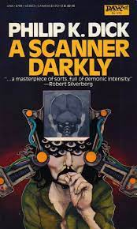

BOOK 18

"A Scanner Darkly" by Philip K. Dick
One of Dick’s most famous novels (published in 1977), its title is taken from the First Epistle to the
Corinthians. Like above, it’s written by Paul the Apostle, this time to the church in Corinth. The line,
13:12, goes For now we see through a glass, darkly; but then face to face: now I know in part; but then
shall I know even as also I am known. It’s a particularly well-known one, and its opening words
have often been used as famous book titles to other works, such as Sheridan Le Fanu’s 1872 short
story collection In a Glass Darkly and Karleen Koen’s 1986 historical fiction novel Through a Glass Darkly
(its sequel continues the quotation, being called Now Face to Face).